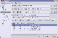

gkrellm trayicons plugin
Current version: 1.03 (ChangeLog)
About
gkrellm-trayicons is a plugin for gkrellm that displays a variable number of user-defined, automatically scaled icons. The icons may be used either for notification or as application launchers. The plugin serves a similar purpose to the "system tray" on the Windows taskbar. The notification functionality has been designed to facilitate easy integration into shell scripts and existing applications.
History
The idea was born few years ago when I was striving to find a simple way to integrate my console-based IRC client (irssi) with my desktop. I needed some kind of a notification when someone had sent me a message or when a friend had joined the IRC network. For that purpose I created a patch for the icewm window manager. That patch adds a bunch of small icons to the taskbar. The icon may be in one of two states - it's either active or inactive. It's very easy to switch the state of the icons using a set of "activation files". The icon gets activated whenever an application writes a message to the activation file. Upon activation the icon image changes and the content of the activation file is displayed in a small popup area.
I've never released the patch publicly, thinking it hadn't been generic enough to be useful for other people. Now, few years later, I've decided to try using some other window managers and thus I no longer want to be dependent on features bounded to some particular window manager. The natural decision was to implement the notification functionality in gkrellm in form of a plugin. Gkrellm is an excellent tool precisely because it allows one to switch window managers freely without losing any of the monitors and controls one is used to.
Usage
First you have to configure the plugin. The icons may be in any of the common image formats (PNG, GIF, JPG, XPM). The image size doesn't matter because all the icons are scaled automatically to the size specified in the configuration.
Left click deactivates the icon and runs the associated command. Right click just deactivates the icon. Middle click launches the configuration dialog.
Integration
The idea is to take advantage of the power and flexibility of the file system. It's very easy to integrate the notification into applications and even to invoke it from the shell.
Using an activation file, the following command activates the icon and displays the message in the popup area:
echo "This is a message." > ~/.trayicons/1
Alternatively, an activation directory may be used. Activation directories should be preferred to activation files because they guarantee that a notification message is never lost even in situations when two or more notifications are issued in quick succession. The following command exemplifies the use of an activation directory:
echo "This is a message." > \
~/.trayicons/2/`perl -e "print time.rand"`
It's similarly simple to integrate the notification into an application. You could either make use of the application's ability to launch commands in response to events, or you could patch the application's source code.
Existing user-contributed scripts and patches are available in the "misc" directory in the distribution tarball. For example, there is a plugin for the irssi IRC client available.
Configuration dialog:

(click to enlarge)
{kind=link}